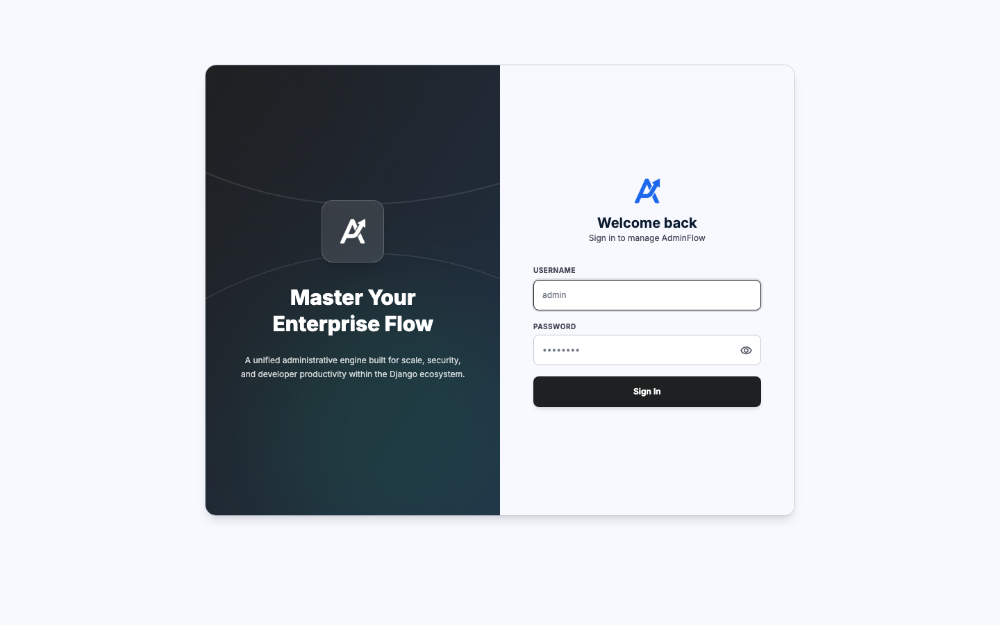

Quick Start
This guide gets AdminFlow running in your project in under 5 minutes.
Step 1 — Install
pip install "django-adminflow[all]" # or pick individual extras
Step 2 — settings.py
Here is the complete settings.py configuration with every AdminFlow setting documented.
INSTALLED_APPS
Add "adminflow" before "django.contrib.admin".
Add the optional apps only for the integrations you installed.
INSTALLED_APPS = [
"adminflow", # ← must be FIRST, before django.contrib.admin
"django.contrib.admin",
"django.contrib.auth",
"django.contrib.contenttypes",
"django.contrib.sessions",
"django.contrib.messages",
"django.contrib.staticfiles",
# Your own apps
"myapp",
# ── Optional: add only what you installed ──────────────────────────────
"simple_history", # audit history
"import_export", # import / export
"django_otp", # 2FA core
"django_otp.plugins.otp_totp", # TOTP (Google Authenticator, Authy)
"django_otp.plugins.otp_email", # email one-time passwords
"django_otp.plugins.otp_static", # backup / recovery codes
]
MIDDLEWARE
MIDDLEWARE = [
"django.middleware.security.SecurityMiddleware",
"django.contrib.sessions.middleware.SessionMiddleware",
"django.middleware.common.CommonMiddleware",
"django.middleware.csrf.CsrfViewMiddleware",
"django.contrib.auth.middleware.AuthenticationMiddleware",
"django_otp.middleware.OTPMiddleware", # ← 2FA (after AuthenticationMiddleware)
"django.contrib.messages.middleware.MessageMiddleware",
"django.middleware.clickjacking.XFrameOptionsMiddleware",
"simple_history.middleware.HistoryRequestMiddleware", # ← history (records who made the change)
]
Note
OTPMiddleware must come after AuthenticationMiddleware.
HistoryRequestMiddleware must come after AuthenticationMiddleware.
TEMPLATES
Add AdminFlow’s context processor so templates can access settings like the title and theme:
TEMPLATES = [
{
"BACKEND": "django.template.backends.django.DjangoTemplates",
"DIRS": [],
"APP_DIRS": True,
"OPTIONS": {
"context_processors": [
"django.template.context_processors.request",
"django.contrib.auth.context_processors.auth",
"django.contrib.messages.context_processors.messages",
"adminflow.context_processors.adminflow_settings", # ← required
],
},
},
]
Warning
adminflow.context_processors.adminflow_settings is required.
Without it the sidebar title, theme colours and login panel text will not render.
AdminFlow Core Settings
# ── Branding ──────────────────────────────────────────────────────────────
ADMINFLOW_TITLE = "My App" # sidebar header + browser tab title
ADMINFLOW_COMPANY = "My Company" # shown in the footer
# ADMINFLOW_LOGO = "logo.svg" # path relative to MEDIA_URL
# ── Theme colours ─────────────────────────────────────────────────────────
ADMINFLOW_PRIMARY_COLOR = "#1f2021"
ADMINFLOW_SECONDARY_COLOR = "#475569"
ADMINFLOW_SUCCESS_COLOR = "#10B981"
ADMINFLOW_WARNING_COLOR = "#F59E0B"
ADMINFLOW_DANGER_COLOR = "#EF4444"
# ── Sidebar ────────────────────────────────────────────────────────────────
ADMINFLOW_SIDEBAR_COLOR = "#0f172a" # sidebar background
ADMINFLOW_SIDEBAR_TEXT_COLOR = "#94a3b8" # inactive item text
ADMINFLOW_SIDEBAR_ACTIVE_TEXT_COLOR = "#ffffff" # active item text
ADMINFLOW_SIDEBAR_COLLAPSIBLE = True # allow sidebar to collapse
ADMINFLOW_SIDEBAR_WIDTH = 280 # width in pixels
# ── UI ─────────────────────────────────────────────────────────────────────
ADMINFLOW_BORDER_RADIUS = "16px" # card / input corner radius
ADMINFLOW_FONT = "Inter" # Google Font name
ADMINFLOW_ENABLE_COMMAND_PALETTE = True # Cmd+K quick search
# ── Login page hero banner ─────────────────────────────────────────────────
ADMINFLOW_LOGIN_TITLE = "Welcome back"
ADMINFLOW_LOGIN_SUBTITLE = "Sign in to manage your application."
# ── 2FA ───────────────────────────────────────────────────────────────────
ADMINFLOW_DJANGO_OTP = True # show OTP verification screen after login
Email (for Email OTP)
Required when using django_otp.plugins.otp_email:
EMAIL_BACKEND = "django.core.mail.backends.smtp.EmailBackend"
EMAIL_HOST = "smtp.gmail.com"
EMAIL_PORT = 587
EMAIL_USE_TLS = True
EMAIL_HOST_USER = "noreply@myapp.com"
EMAIL_HOST_PASSWORD = "your-smtp-password"
DEFAULT_FROM_EMAIL = EMAIL_HOST_USER
# django-otp email sender overrides
OTP_EMAIL_SENDER = EMAIL_HOST_USER
OTP_EMAIL_FROM_EMAIL = EMAIL_HOST_USER
OTP_EMAIL_COOLDOWN_DURATION = 60 # seconds between OTP requests
Tip
Store EMAIL_HOST_PASSWORD in an .env file and load it with
python-dotenv or django-environ — never commit credentials to source control.
Full Example settings.py
from pathlib import Path
import os
BASE_DIR = Path(__file__).resolve().parent.parent
SECRET_KEY = "your-secret-key"
DEBUG = True
ALLOWED_HOSTS = []
INSTALLED_APPS = [
"adminflow",
"django.contrib.admin",
"django.contrib.auth",
"django.contrib.contenttypes",
"django.contrib.sessions",
"django.contrib.messages",
"django.contrib.staticfiles",
# your apps
"myapp",
# optional integrations
"simple_history",
"import_export",
"django_otp",
"django_otp.plugins.otp_totp",
"django_otp.plugins.otp_email",
"django_otp.plugins.otp_static",
]
MIDDLEWARE = [
"django.middleware.security.SecurityMiddleware",
"django.contrib.sessions.middleware.SessionMiddleware",
"django.middleware.common.CommonMiddleware",
"django.middleware.csrf.CsrfViewMiddleware",
"django.contrib.auth.middleware.AuthenticationMiddleware",
"django_otp.middleware.OTPMiddleware",
"django.contrib.messages.middleware.MessageMiddleware",
"django.middleware.clickjacking.XFrameOptionsMiddleware",
"simple_history.middleware.HistoryRequestMiddleware",
]
ROOT_URLCONF = "myproject.urls"
TEMPLATES = [
{
"BACKEND": "django.template.backends.django.DjangoTemplates",
"DIRS": [],
"APP_DIRS": True,
"OPTIONS": {
"context_processors": [
"django.template.context_processors.request",
"django.contrib.auth.context_processors.auth",
"django.contrib.messages.context_processors.messages",
"adminflow.context_processors.adminflow_settings", # ← required
],
},
},
]
DATABASES = {
"default": {
"ENGINE": "django.db.backends.sqlite3",
"NAME": BASE_DIR / "db.sqlite3",
}
}
STATIC_URL = "static/"
MEDIA_URL = "/media/"
MEDIA_ROOT = BASE_DIR / "media"
# ── AdminFlow ──────────────────────────────────────────────────────────────
ADMINFLOW_TITLE = "My App"
ADMINFLOW_COMPANY = "My Company"
ADMINFLOW_PRIMARY_COLOR = "#1f2021"
ADMINFLOW_SECONDARY_COLOR = "#475569"
ADMINFLOW_SUCCESS_COLOR = "#10B981"
ADMINFLOW_WARNING_COLOR = "#F59E0B"
ADMINFLOW_DANGER_COLOR = "#EF4444"
ADMINFLOW_SIDEBAR_COLOR = "#0f172a"
ADMINFLOW_SIDEBAR_TEXT_COLOR = "#94a3b8"
ADMINFLOW_SIDEBAR_ACTIVE_TEXT_COLOR = "#ffffff"
ADMINFLOW_SIDEBAR_COLLAPSIBLE = True
ADMINFLOW_SIDEBAR_WIDTH = 280
ADMINFLOW_BORDER_RADIUS = "16px"
ADMINFLOW_FONT = "Inter"
ADMINFLOW_ENABLE_COMMAND_PALETTE = True
ADMINFLOW_LOGIN_TITLE = "Welcome back"
ADMINFLOW_LOGIN_SUBTITLE = "Sign in to manage your application."
ADMINFLOW_DJANGO_OTP = True
# ── Email OTP ──────────────────────────────────────────────────────────────
EMAIL_BACKEND = "django.core.mail.backends.smtp.EmailBackend"
EMAIL_HOST = os.getenv("EMAIL_HOST", "smtp.gmail.com")
EMAIL_PORT = int(os.getenv("EMAIL_PORT", 587))
EMAIL_USE_TLS = True
EMAIL_HOST_USER = os.getenv("EMAIL_HOST_USER", "")
EMAIL_HOST_PASSWORD = os.getenv("EMAIL_HOST_PASSWORD", "")
DEFAULT_FROM_EMAIL = EMAIL_HOST_USER
OTP_EMAIL_SENDER = EMAIL_HOST_USER
OTP_EMAIL_FROM_EMAIL = EMAIL_HOST_USER
OTP_EMAIL_COOLDOWN_DURATION = 60
Step 3 — Run migrations
python manage.py migrate
Step 4 — Collect static files
python manage.py collectstatic
Step 5 — Visit your admin
Start your dev server and open http://localhost:8000/admin/.

After login you will see the new dashboard:

Next Steps
Two-Factor Authentication — enable 2FA for your staff users
Audit History — track every change with field-level diffs
Import / Export — export all related data in one file
UI Features — learn about the sidebar, icons, and more
Customisation — full settings reference